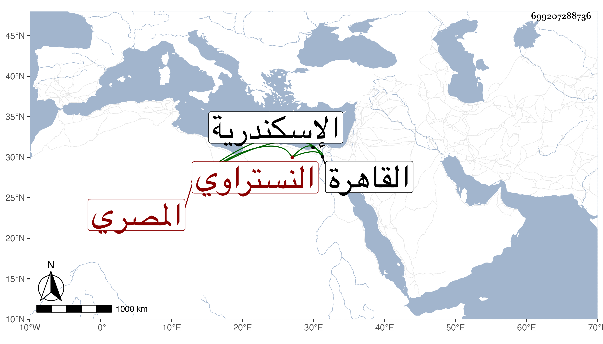

0902Sakhawi.DawLamic.ITO20230111-ara1.EIS1600.699207288736
Biography ID: 699207288736
829
عبد الكريم بن أحمد بن عبد العزيز بن أبي طالب بن علي بن سيدهم كريم الدين النستراوي الأصل المصري . والد أنس جهة شيخنا واخوتها ويعرف بابن عبد العزيز ولد في ربيع الأول سنة ست وثلاثين وسبعمائة بنستروة من المزاحميتين من أعمال القاهرة وقدمها على عمه البدر حسن بن عبد العزيز وهو يباشر بديوان الجيش فنشأ تحت كنفه وحفظ القرآن واشتغل وتعانى الكتابة وتميز فيها وباشر في دواوين الأمراء ثم ترقى لنظر الجيش في سنة اثنتين وتسعين فباشر مدة ودخل مع الظاهر برقوق في سنة ثلاث وتسعين البلاد الشامية ثم عاد معه وعزل عنه ، واستمر خاملا حتى مات في أواخر ربيع الأول سنة سبع قال شيخنا في معجمه وكان رئيسا محبا في الفقراء كثيرا رأيت معه ثبتا فيه سماعه للترمذي على ابن البوري بقراءة الغماري باسكندرية أنابه ابن طرخان أنابه ابن البنا وكذا سمع السيرة النبوية على الجمال بن نباتة والكثير منها على البهاء بن خليل الحافظي وعلى الخلاطي في آخرين كل ذلك بعناية عمه البدر حسن بن عبد العزيز حتى أسمعه على نفسه ولو اعتنى به من الصغر لادرك إسنادا عاليا ، وقد قرأت عليه من حفظي حديث عمر بن شاكر الثلاثي من الترمذي بسنده المذكور ، وقال في الأنباء أنه اختل حاله في آخر أمره بحيث أنه لما مات لم يترك إلا نزرا يسيرا ولكنه لم يخلف عليه دينا قال فشابه عمه من جهة وفارقه من جهة فإن عمه مات وخلف دينا كثيرا وتركة زوجته فجاء ما تحصل من حصته في تركة زوجته بقدر وفاء دينه وأما هذا فلم يخلف سوى ستمائة درهم فأخرج بها ولم يخلف فرسا ولا حمارا ولا دارا إلا قليلا من الثياب الملبوسة وأثاثا يسيرا وخلف خمس بنات وزوجة وابنى أخ فلم تبلغ تركته إلا شيئا يسيرا وهو جد أولادي لأمهم ، وقال المقريزي في عقوده وغيرها : كان رئيسا محبا في أهل الخير وكان جارنا مدة ثم صارت بيننا وبينه صهارة فرحمه الله فما كان أكثر رياضة أخلاقه وملاحة وجهه وعذوبة كلامه .
